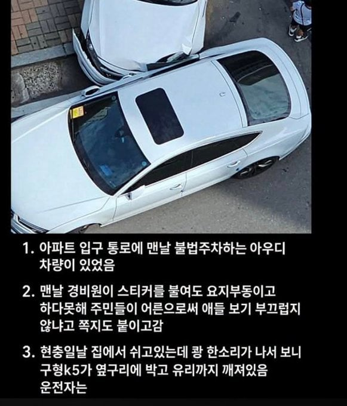
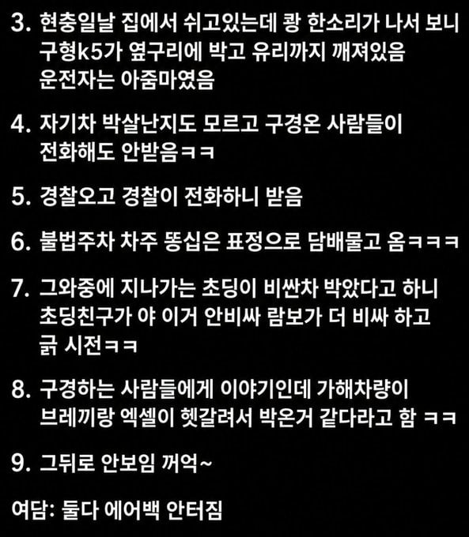

에어백 안터짐 사족은 왜 달려있음? 현대차 각도가 중요하다 그때 시절인가?
사람도 안탄 주차된 차에 에어백 안터졌다는... 사고만 나면 에어백 안터짐 하는 컨셉이냐 저거?
22재E
???: 이재희씨요?
선생님도 이재희씨를 아세요?
초딩이 긁은게 결정타
쟤들은 가오상하면 끝인거라
차 모르는 사람들은 구형 카푸어 새끼들도 부자인줄 알더라
국산 타이어 앞뒤 다르게 끼고 다니고 문콕한거 긁힌거 다 방치하고 타는 새끼들이 한트럭인데

여윽시 큰일은 여자가하네 ㅋㅋㅋㅋㅋㅋㅋㅋㅋㅋ